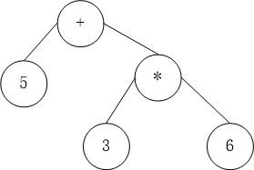

表达式求值（递归下降法）
表达式求值，无论是逆波兰表达式方法，还是递归下降法，都是采取将表达式进行解析，使得解析之后的结果易于计算，逆波兰表达式方法解析的结果是用栈存储的，而递归下降法解析的结果是用树存储的。先看看递归下降法解析的结果。

要计算这个解析后的表达式就比较容易了，就是左子树的结果加上右子树的结果。
要解析为这个树，所用到的算法模型如下：
表达式 = 项 + 表达式 或
表达式 = 项 - 表达式 或
表达式 = 项
项 = 因子 * 项 或
项 = 因子 / 项 或
项 = 因子
因子 = 数字 或
因子 = -因子 或
因子 = ( 表达式 )
这个算法有一个问题，就是它的语法是右结合的，也就是说1-2+3会被解析为1-(2+3)，要更改这一点，可以变为左结合的，但是这样会导致无穷递归的情况，要解决无穷递归比较麻烦，一个简单的解决方案是改变表达式和项的定义，改变之后的结果如下.
表达式 = 多个项相加减
项 = 多个因子相乘除
此时，可以根据以上的定义，抽象出树的结点，具体的代码如下。
#include <iostream>
#include <cmath>
#include <vector>
class Noncopyable{
protected:
Noncopyable(){};
~Noncopyable(){};
private:
Noncopyable(const Noncopyable&);
const Noncopyable& operator=(const Noncopyable& noncopyable);
};
class Node : private Noncopyable{
public:
Node(){}
virtual double calculate() const = 0;
virtual ~Node(){};
};
class NumberNode:public Node{
public:
NumberNode(int number):number_(number){}
double calculate() const{
return number_;
}
private:
const double number_;
};
class UnaryNode:public Node{
public:
UnaryNode(Node *child):child_(child){}
~UnaryNode(){
delete child_;
}
protected:
Node* const child_;
};
class UMinusNode:public UnaryNode{
public:
UMinusNode(Node *child):UnaryNode(child){}
double calculate() const{
return -child_->calculate();
}
};
class BinaryNode:public Node{
public:
BinaryNode(Node *left, Node *right):left_(left),right_(right){}
~BinaryNode(){
delete left_;
delete right_;
}
protected:
Node* const left_;
Node* const right_;
};
class MutipleNode : public Node{
public:
MutipleNode(Node *child){
addChild(child,true);
}
~MutipleNode(){
std::vector<Node *>::iterator it;
for(it = children_.begin();it != children_.end();it++){
delete *it;
}
}
void addChild(Node *child, bool positivity){
children_.push_back(child);
positivity_.push_back(positivity);
}
protected:
std::vector<Node *> children_;
std::vector<bool> positivity_;
};
class SumNode : public MutipleNode{
public:
SumNode(Node *node):MutipleNode(node){}
double calculate() const{
double res = 0.0;
for(int i=0;i<children_.size();i++){
if(positivity_[i] == true){
res += children_[i]->calculate();
}else{
res -= children_[i]->calculate();
}
}
return res;
}
};
class ProductNode : public MutipleNode{
public:
ProductNode(Node *node):MutipleNode(node){}
double calculate() const{
double res = 1.0;
for(int i=0;i<children_.size();i++){
if(positivity_[i] == true){
res *= children_[i]->calculate();
}else if(children_[i]->calculate() != 0.0){
res /= children_[i]->calculate();
}else{
res = HUGE_VAL;
}
}
return res;
}
};
可见，已知表达式树，要求解表达式是很容易的，只需要在根节点调用calculate方法即可。此外，还需要一个类来执行对字符的扫描。
#include <string>
#include <cctype>
class Scanner{
public:
enum Token{
TOKEN_END,
TOKEN_ERROR,
TOKEN_NUMBER,
TOKEN_PLUS,
TOKEN_MINUS,
TOKEN_MULTIPLY,
TOKEN_DIVIDE,
TOKEN_LPARENTHESIS,
TOKEN_RPARENTHESIS,
TOKEN_IDENTIFIER,
TOKEN_ASSIGN
};
Scanner(std::string& buf):buf_(buf),curPos_(0){
accept();
}
Token getToken() const{
return token_;
}
double getNumber() const{
return number_;
}
void accept(){
skipeWhite();
switch (buf_[curPos_]){
case '+':
token_ = TOKEN_PLUS;
curPos_++;
break;
case '-':
token_ = TOKEN_MINUS;
curPos_++;
break;
case '*':
token_ = TOKEN_MULTIPLY;
curPos_++;
break;
case '/':
token_ = TOKEN_DIVIDE;
curPos_++;
break;
case '(':
token_ = TOKEN_LPARENTHESIS;
curPos_++;
break;
case ')':
token_ = TOKEN_RPARENTHESIS;
curPos_++;
break;
case '0':case '1':case '2':case '3':case '4':
case '5':case '6':case '7':case '8':case '9':
case '.':
token_ = TOKEN_NUMBER;
char *p;
number_ = strtod(&buf_[curPos_],&p);
curPos_ = p - &buf_[0];
break;
case '\0':case '\r':case '\n':case EOF:
token_ = TOKEN_END;
break;
default:
token_ = TOKEN_ERROR;
break;
}
}
private:
void skipeWhite(){
while(isspace(buf_[curPos_])){
curPos_++;
}
}
Token token_;
double number_;
int curPos_;
const std::string& buf_;
};
关键是解析，其实这里解析写得比较简单，因为没有做异常处理，只需要根据定义一步一步写。值得注意的是，第一次看定义的时候，总感觉会无穷递归，但事实上，这种相互的调用是有出口的。这一点需要好好理解。下面是具体的代码。
#include "scanner.h"
#include "node.h"
class Parser{
public:
Parser(Scanner& scanner):scanner_(scanner){}
void parse(){
tree_ = expression();
}
double calculate() const{
return tree_->calculate();
}
private:
Node* expression(){
Node* node = term();
MutipleNode *ret = new SumNode(node);
Scanner::Token token = scanner_.getToken();
while(token == Scanner::TOKEN_PLUS || token == Scanner::TOKEN_MINUS){
scanner_.accept();
MutipleNode *node = term();
ret->addChild(node,token == Scanner::TOKEN_PLUS);
token = scanner_.getToken();
}
return ret;
}
MutipleNode* term(){
Node *node = factor();
MutipleNode *ret = new ProductNode(node);
Scanner::Token token = scanner_.getToken();
while(token == Scanner::TOKEN_MULTIPLY || token == Scanner::TOKEN_DIVIDE){
scanner_.accept();
node = factor();
ret->addChild(node,token + Scanner::TOKEN_MULTIPLY);
token = scanner_.getToken();
}
return ret;
}
Node* factor(){
Scanner::Token token = scanner_.getToken();
if(token == Scanner::TOKEN_NUMBER){ /* number */
scanner_.accept();
double number = scanner_.getNumber();
return new NumberNode(number);
}
else if(token == Scanner::TOKEN_MINUS){ /* -factor */
scanner_.accept();
Node *node = factor();
return new UMinusNode(node);
}
else if(token == Scanner::TOKEN_LPARENTHESIS){ /* ( expression ) */
scanner_.accept();
Node* node = expression();
if(scanner_.getToken() == Scanner::TOKEN_RPARENTHESIS){
scanner_.accept();
}else{
std::cout<<"Error: illegel branket."<<token<<std::endl;
}
return node;
}
return NULL;
}
Scanner& scanner_;
Node* tree_;
};
主函数如下：
int main(int argc, char const *argv[])
{
std::string s;
do{
std::cout<<"> ";
std::getline(std::cin,s);
Scanner scanner(s);
Parser parser(scanner);
parser.parse();
double ret = parser.calculate();
std::cout<< ret << std::endl;
}while(1);
return 0;
}
这里只是把最基本的东西展示出来了，需要优化的地方有很多，比如支持变量的定义，支持属性函数等。但个人感觉，这里已经把这个算法的核心展示出来了。